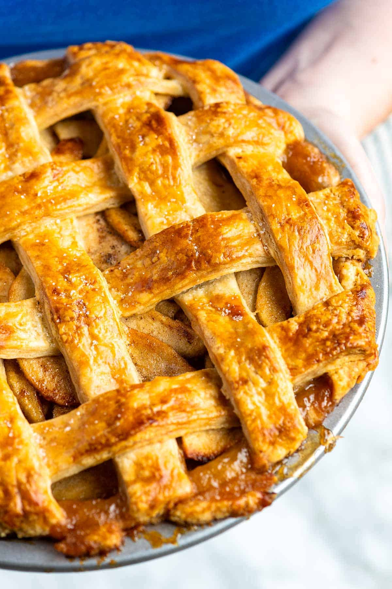

Jazmon's Wicked Apple Mayhem

| Prep Time: |
Cook Time: |
Total Time: |
| 30 mins |
1 hour |
1 hour 30 mins |
Lasagna Ingredients:
- 1 (9-inch) double crust homemade pie crust, our recipe makes 2 crusts (one for the top and one for the bottom)
- 4 ¼ pounds (1925g) baking apples, about 8 large apples
- 1/2 cup (100g) light or dark brown sugar
- 1/2 cup (100g) granulated sugar
- 1/4 teaspoon fine sea salt
- 1 teaspoon ground cinnamon
- 1/4 teaspoon ground ginger
- 1/4 teaspoon ground cardamom
- 1/4 teaspoon ground allspice
- 1/4 teaspoon freshly grated nutmeg
- 2 tablespoons (16g) cornstarch
- 1 tablespoon (14g) butter
- 1 large egg
Instructions:
MAKE APPLE PIE FILLING:
- Peel, quarter, and core the apples, then slice into 1/4-inch slices. Place them into a very large bowl.
- Scatter brown sugar, granulated sugar, salt, cinnamon, ginger, cardamom, allspice, and nutmeg over the apples. Toss well, then set aside on the counter for 1 hour.
PREPARE PIE CRUST:
- Roll out half of the pie dough to fit a 9-inch pie dish. To prevent sticking, sprinkle flour on your work surface and rolling pin. Roll from the center outwards for even thickness, lifting and rotating the dough by a quarter turn as you go. Check the size by inverting the pie dish over the dough (it should be 1 ½ to 2 inches larger).
- Carefully place the dough into the pie dish without stretching it, and trim the edges to within 1 inch of the dish.
- Roll out the second half of the dough to a similar size as before and transfer it to a large parchment-lined baking sheet.
- Keep the pie dish and second sheet of pie dough in the refrigerator until needed.
ASSEMBLE THE AVENGERS:
- Position an oven rack towards the center of the oven. Preheat the oven to 400°F (200°C). Set aside a baking sheet and line it with foil or parchment paper (you will bake the pie on this).
- Toss the cornstarch with the apples. Transfer most (if not all) of the apples into the prepared bottom crust, using your hands to really pack them down into the pie. Fill the pie until apples are mounded at the same height or a little higher than the edge of the pie crust, tucking in as many as you can. If you have too many apples, save them (see notes). See our video showing how high we pile the apples.
- Pour the juices accumulated at the bottom of the bowl over the apples. (If there’s more than 3/4 to 1 cup of liquid, leave some behind, see notes below.)
- Cut a tablespoon of butter into 8 or so small pieces and dot them over the pie.
- Place the second pie dough round over the filling or cut it into strips and lattice the top (see our video in the article above or read this tutorial for how to lattice a crust. If you are not adding a lattice crust and are adding the top crust in one piece, use a sharp knife to cut a few slits in the top of the crust to allow steam to vent.
- Trim excess dough from the top crust or lattice strips, then fold the overhang underneath, forming a thick rim. Press it together or crimp it with your fingers (or use a fork).
- Whisk the egg with a tablespoon of water, and then use it as an egg wash by lightly brushing the top crust. This egg wash adds shine and helps the crust brown.
BAKE THE PIE:
- Place the prepared pie on the baking sheet and bake for about 75 minutes, turning a few times for even browning.
- If you notice that the pie crust is browning too quickly, mold a large piece of foil over a bowl that’s been placed upside down to make a foil dome. Place the foil dome over the pie for the remaining bake time. This will slow the browning.
- Apple pie is done when the juices are bubbling through the vents of the top crust or lattice. If you do not see bubbles, the pie needs more time. Another way to check for doneness is to use an internal thermometer. Pierce the pie in the middle, then test the temperature. The pie is done when it reads 195°F. Piercing the pie is also an excellent indication of how soft the apples are. If they feel too crunchy, the pie needs more time.
- Cool the pie without slicing it for at least 2 hours, preferably longer. Keep in mind that the pie filling does not fully thicken until it is completely cooled. Waiting to cut into the pie until cool will prevent a soggy slice.
| Calories |
Fat |
Carbs |
Protein |
| WAY TOO MUCH |
At least 100g |
At least 100g |
At least 100g |
Back to Home